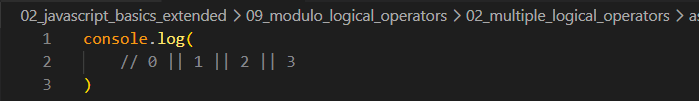
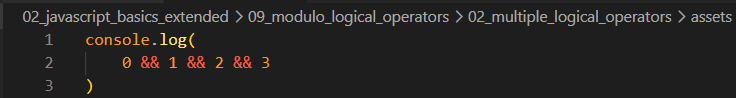
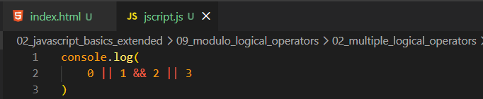

Multiple Logical Operators
Intro
Aqui verificar multiplos operadores logicos para verificar sua saida.
Aqui verificar multiplos operadores logicos para verificar sua saida.

Nesse exemplo podemos observar que temos multiplas escolhas para nosso operador logico ou (||). Como resultado dessa expressao é 1, podemos lembrar da aula passada onde o operador logico || retornava a primeira avaliacao feita. Agora iremos entender poque isso nao ocorreu.
Como mencionado na aula anterior o operador || ira retornar o primeiro lado da expressao caso ele seja verdadeiro (true), e como ja vimos o 0 tem como valor de coercao false (falsy). Agora se apassemos o 0 e ele iria avaliar apenas o 1 e 2, ira ser retornado o 1 tanto por ser coecao (true) quanto por estar ao lado da esquerda.
Mas se tivessemos comparando o 3 || 1, seria retornado o 3, pois sempre e verificado da esqueda para a direita.

Aqui teremos como resultado 0. Como mencionado tambem na aula passada, o operador logico and (&&).
O primeiro lado da expressao é falsy ele é retornado. Sendo avaliado o 0 e 1, e como o 0 e um falsy value, ele e retornado.

Nesse caso como resulado teremos o 2.
Na operacao logica, temos uma questao similiar a operacao aritmetica, onde temos uma precedencia de operacoes.
Nesse caso quem tem a precedencia é o and (&&). Entao oque sera avaliado primeira sera 1 e(&&) 2 e nessa operacao caso o primeiro operador logico seja true o segundo lado e retornado. Depois o proximo a ser avaliado sera 0 ou(||) 2 e como o 0 e falsy, ele retorna o true (2).